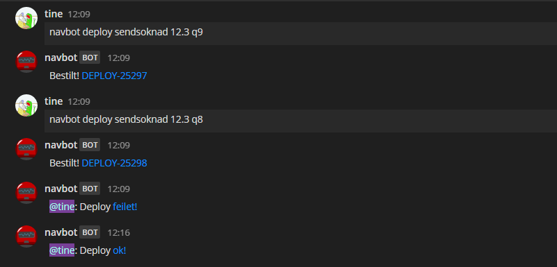
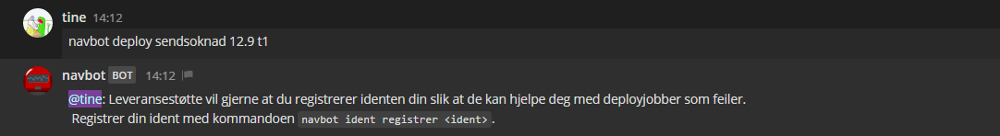
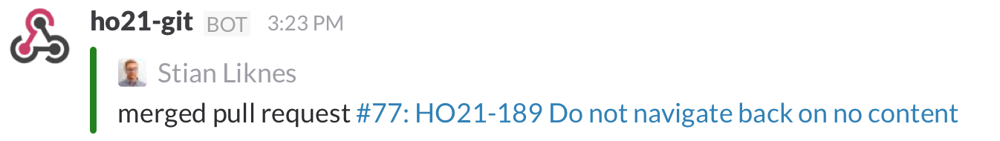
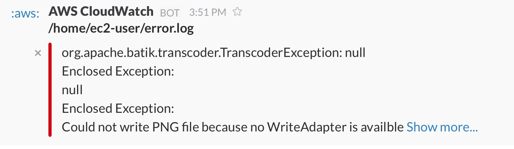
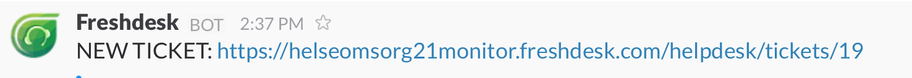

Slack & hubot
En chatops-workshop av Alexander, Tine og Tomas
Agenda: En chatops-intro
- Chatops: Hva er det (godt for)?
- Slack: Utforske features
- Hubot: Hva kan vi bruke det til?
- Workshop: Få det i fingra
Chatops
- Term fra Github
- Dialog
- Events
- Prosedyrer/kommandoer
Fordeler
- Synlighet
- Selvforsterkende dokumentasjon
- Ett utgangspunkt for mange verktøy
#sukker-deploy

#sukker-deploy

For PR og kodeendringer

For systemfeil og metrikker

For brukerfeedback

Tools of the trade
| What? |
Where? |
$$$? |
| Slack |
Web |
$* |
| Hipchat |
Hosted eller web |
$* |
| Mattermost |
Hosted |
0 |
| IRC |
Hosted |
0 |
Slack
- IRC
- + Enklere integrering
- + App/bot repository
- + Mobil/Desktop apps
- + Småfeatures
- 4 * 109 $
Integrasjoner
- Slash Commands
- Webhooks
- Bots
- Apps
Slash commands
- Team wide accessable
- Svarer til deg eller kanal
Webhooks
- To typer
- Kanal-spesifikke
Bots
- Gi mer personlighet
- Join / leave channels
- Emoji reactions
- Svare på spørsmål / lytte på tekst
- Events API: Kan vite om alt,
men må spørre om lov
Apps: En ferdig pakke med slash commands og hooks
- Github (Bitbucket)
- Jenkins (TravisCI, CircleCI)
- Google Apps
- Heroku
bekk.slack.com/apps
Hubot
- Appregister
- Slippe å tenke på det rundt
- Adaptere mot ulike chatklienter